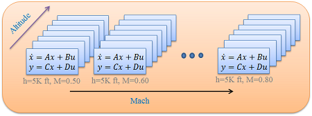

Linear Parameter-Varying Systems
Contents
Linear Parameter-Varying Systems
LPV systems are time-varying, state-space models of the form:
where is a vector of measurable parameters, is a vector of outputs, is the state vector, is a vector of inputs, and , , and are parameter dependent matrices.
The LPV system in Equation 1 depends on a set of time-varying parameters . The trajectories of the parameters are assumed to take on values in a known compact set , and to have known bounds on their derivatives with respect to time: , where and . A trajectory is said to be "rate unbounded" if and .
For control design in the LPV framework, it is further assumed that time variations of are not known in advance, and that the parameter values are measured and available in real-time with sensors. The controller produced is itself a LPV system which is optimized for the parameter trajectories in subject to , and dependent on real-time measurements of the parameter.
LPVTools implements data structures for two types of LPV modeling approaches: i) Linearizations on a gridded domain, and ii) Linear Fractional Transformations (LFT).
Grid-Based LPV Models
Linearizations on a gridded domain are referred to as grid-based LPV models, because they require the user to divide the parameter domain into a grid of parameter values, and then specify the linear dynamics at each grid point. Linearizations on the gridded domain are obtained through Jacobian linearization at each grid point (e.g. batch linearization of Simulink models). All the linearized systems on the grid have identical inputs , outputs  and state vectors . Each linearization approximates the system's dynamics in the vicinity of a particular grid point, and the grid of linearizations captures the system's parameter dependence implicitly.
and state vectors . Each linearization approximates the system's dynamics in the vicinity of a particular grid point, and the grid of linearizations captures the system's parameter dependence implicitly.
Figure 1 illustrates the concept. A nonlinear model is linearized along a grid of Mach and altitude values, resulting in an array of linear systems. Together the linearizations form a LPV system approximation of the original system. Linearization based LPV models do not require any special dependence on the parameter vector. This approach is motivated by the traditional gain-scheduling framework in aircraft flight control, for which models are typically constructed as linearizations around various flight operating points.

Figure 1: LPV model defined on a rectangular grid.
Further Reading
- Marcos, A. and Balas G., "Development of Linear-Parameter-Varying Models for Aircraft," Journal of Guidance, Control, and Dynamics, Vol. 27, no. 2, 2004, pp 218-228, doi: 10.2514/1.9165.
- B. Takarics and P. Seiler, "Gain Scheduling for Nonlinear Systems via Integral Quadratic Constraints," accepted to the American Control Conference, 2015.
LFT-Based LPV Models
An LPV model in Linear Fractional Transformation (LFT) form is an interconnection of a block that represents the plant's nominal dynamics (linear, time invariant), and a block that contains the time-varying parameters which the system depends on.
In the LFT-based approach the LPV system in Equation 1 is expressed as the interconnection of the blocks and , as seen in Figure 2.
Figure 2: An LPV system in LFT form.
where is a constant matrix such that
and is a diagonal matrix
![$$\Delta_\rho =
\left[ \begin{array}{cccc} \rho_1 (t) I_{r_1} & 0 & \ldots & 0 \\
0 & \rho_2 (t) I_{r_2} & \ldots & 0 \\
\vdots & \vdots & \ddots & \vdots \\
0 & 0 & \ldots & \rho_{n_\rho} (t) I_{r_{n_\rho}}
\end{array} \right] \ \ \ \ \ \ \ (3)$$](LPVSystems_eq04426069807405764766.png)
such that . Where indicates a identity matrix, for positive integers , and represent the elements of the parameter vector . Note that the parameter dependence of a LFT model is modeled explicitly, and the LFT form can only be used to model LPV systems whose state matrices are rational functions of the parameters.
Further Reading
- Cockburn, J. C. and Morton, B. G. "Linear Fractional Representations of Uncertain Systems," Automatica, Vol. 33, no. 7, 1997, pp 1263-1271, doi: 10.1016/S0005-1098(97)00049-6.
- J. Doyle, A. Packard, and K. Zhou, "Review of LFTs, LMIs, and ," Proceedings of the 30th IEEE Conference on Decision and Control, 1991, doi: 10.1109/CDC.1991.261572.
- J.F. Magni, S. Bennani, J. P. Dijkgraaf, "An Overview of System Modelling in LFT Form," in Advanced Techniques for Clearance of Flight Control Laws, Springer-Verlag, Germany, pp. 169-195, 2002, doi: 10.1007/3-540-45864-6_11.